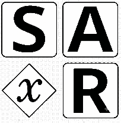

Articles
Long-form write-ups from xSAR. Shorter updates are on X @xSAR_Research.
Sample: How xSAR Articles Are Built
A test article that exercises every Markdown feature the xSAR article pipeline supports, including build-time maths.

Long-form write-ups from xSAR. Shorter updates are on X @xSAR_Research.
A test article that exercises every Markdown feature the xSAR article pipeline supports, including build-time maths.